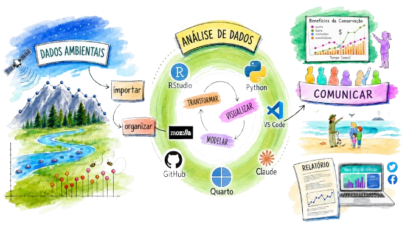

Trabalho com Ciências Sociais Aplicadas — mercados, preços, emprego, comércio exterior, clima — e isso tem implicações para o tipo de dado que uso;
Utilizo, por enquanto, exclusivamente dados secundários: não há experimentos de campo, ensaios ou coletas primárias;
Os dados são públicos — mas público não significa pronto para usar;
Sem dados sigilosos: a preocupação com segurança é menor do que em outras áreas;
O trabalho começa depois que o dado é publicado;
Há um enorme esforço de organização, tratamento e integração antes de qualquer análise;
Cada Observatório de Mercado (uva, manga, etc.) tem seu próprio fluxo de dados.
Portais e sites institucionais
O problema real
Boletins e cotações por e-mail
Application Programming Interface
O problema: site sem API
A solução: reproduzir o formulário via código
Toda base de dados começa com uma decisão de estrutura: como organizar pastas, como nomear arquivos, como versionar
Uma boa estrutura de pastas economiza horas de busca no futuro
Convenção de nomes: consistente, sem espaços, com datas quando necessário
Exemplo de organização
tempecon/
├── dados_uva/
│ ├── 2024/
│ ├── 2025/
│ └── exportacoes_2011_2025.csv
├── dados_manga/
│ ├── 2025/
│ └── precos_manga.csv
└── dados_macro/
└── cambio_ptax.csvVantagens do .csv
Panorama de formatos
| Formato | Quando usar |
|---|---|
.csv |
Dados tabulares, interoperabilidade máxima |
.xlsx |
Múltiplas abas, formatação visual |
.json |
Dados hierárquicos, retorno de APIs |
.parquet |
Grandes volumes, análise com Python/R |
.db / SQL |
Múltiplas tabelas relacionadas |
Armazenamento local + Dropbox
Não é a solução “ideal” de um banco de dados corporativo. É a solução pragmática que funciona no dia a dia da pesquisa.
A reflexão vale: repositórios institucionais (BDPA) existem e têm papel importante na memória organizacional dos dados.
Missing values
Outliers e erros de fonte
Incorporação incremental
Documentação
Validação na entrada
Limpeza
Auditoria periódica
Qualidade de dados não é um evento — é uma prática.
Por muito tempo: alimentação manual
Consequências
Hoje: automação
Ganhos reais
Exemplo: leitura de email
Toda sexta-feira chegam boletins de preços. Com automação:
Antes: 15–20 minutos por boletim, risco de erro
Hoje: automático, auditável
Ter uma base bem organizada é necessário — mas não suficiente
É preciso saber quais estatísticas e análises fazem sentido para o problema em questão: série temporal, análise de preços relativos, correlação, modelagem de previsão?
O método errado com dado certo gera conclusão errada
E o dado certo, analisado corretamente, precisa chegar até quem decide
Formatos de disseminação
| Produto | Público |
|---|---|
| Artigo científico | Pares acadêmicos |
| Palestra técnica | Especialistas |
| Boletim / relatório | Gestores |
| Dashboard | Monitoramento contínuo |
| Card / mensagem | Produtor, mercado, público amplo |

Adaptado de https://beatrizmilz.github.io/slidesR/xaringan/09-2021-rday.html#9
https://www.embrapa.br/web/semiarido/observatorio-da-manga
https://www.embrapa.br/web/semiarido/observatorio-da-uva
📲 WhatsApp: +55 87 99961-5799